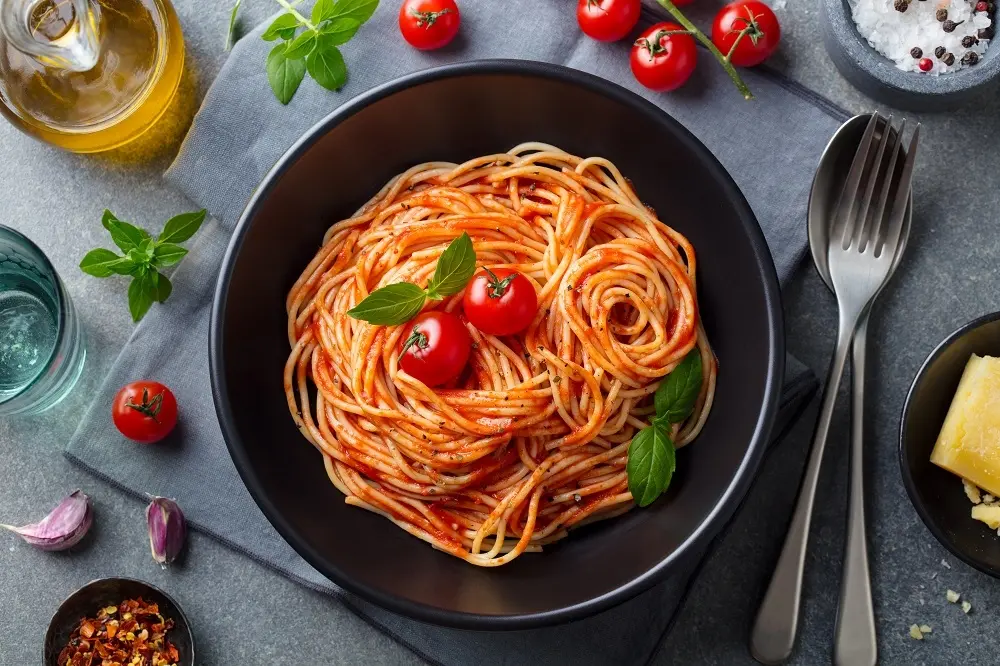
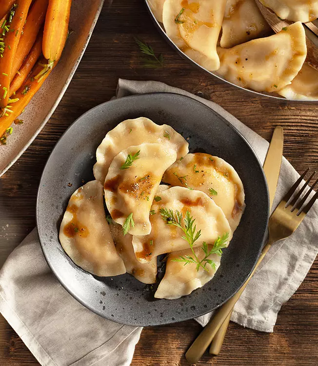
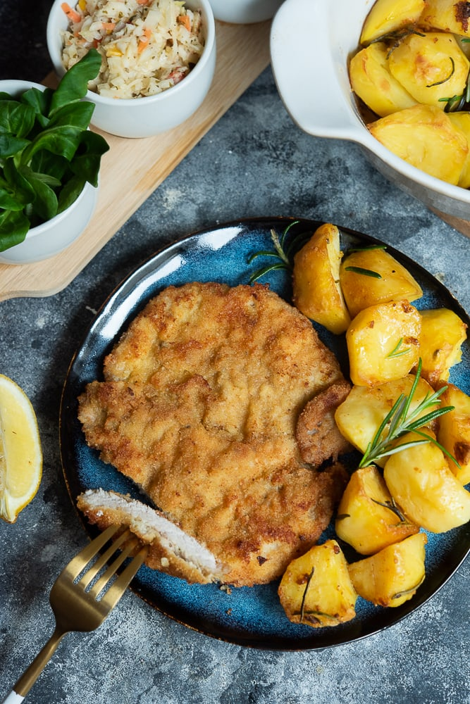

Spagetti
Najwięcej makaronu zjadają Włosi. Żadne zaskoczenie, prawda? Już jednak ilość może robić wrażenie. Przeciętny Włoch zjada rocznie aż 26 kilogramów makaronu - czyli całe Włochy zjadają rocznie odpowiednik 600 milionów kilometrów spaghetti. Na drugim miejscu znajdują się... Wenezuelczycy, pochłaniając zaledwie połowę tego. Trzecią lokatę zajęli natomiast Tunezyjczycy.

Pizza
Pizza to zbiór substancji pobudzających ośrodki przyjemności i smaku. Węglowodany tworzą rodzaj uzależnienia, a kazeina zawarta w serze stymuluje receptory odpowiedzialne za regulację stanu przyjemności w mózgu. Ogólnie rzecz biorąc, smak wyłaniający się z połączenia węglowodanów, pomidora, świeżej mozzarelli i innych składników jest niezaprzeczalnie niezwykły.

Pierogi
Najwięcej makaronu zjadają Włosi. Żadne zaskoczenie, prawda? Już jednak ilość może robić wrażenie. Przeciętny Włoch zjada rocznie aż 26 kilogramów makaronu - czyli całe Włochy zjadają rocznie odpowiednik 600 milionów kilometrów spaghetti. Na drugim miejscu znajdują się... Wenezuelczycy, pochłaniając zaledwie połowę tego. Trzecią lokatę zajęli natomiast Tunezyjczycy.

Kotlet Schabowy
To klasyczne danie ma w polskiej kulturze tak istotny status, że doczekało się nawet własnego święta – 7 listopada obchodziliśmy Dzień Kotleta Schabowego. Co ciekawe, choć dzisiaj trudno sobie wyobrazić rodzimą kuchnię bez tego dania, w rzeczywistości zagościło ono na naszych stołach stosunkowo późno. Najstarsze znane polskie książki kucharskie takie jak „Compendium Ferculorum” Stanisława Czarnieckiego